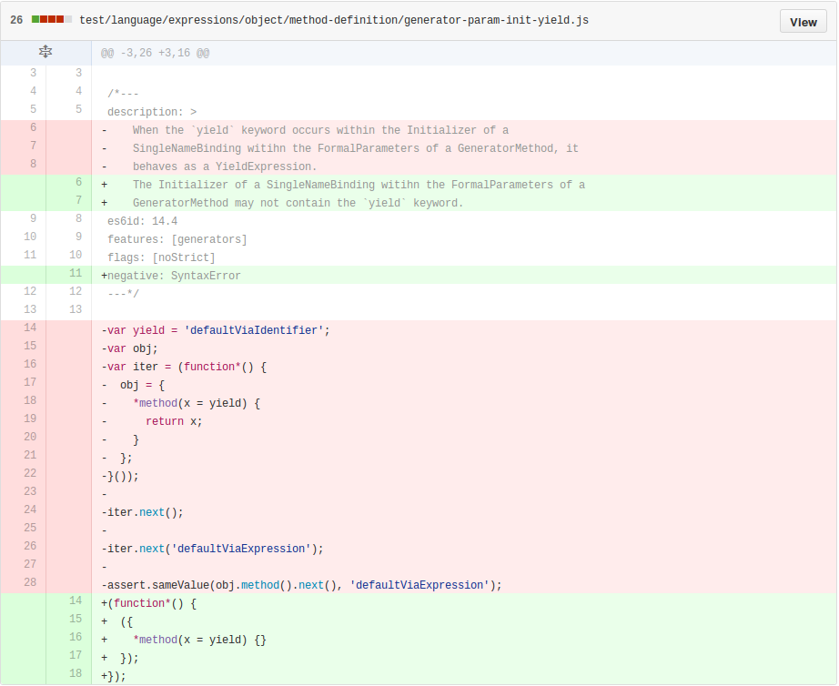

class: center, middle # The Test that Should Not Be --- class: center, middle # Background: Grammar Conventions --- # Grammar Production Parameters > ### 5.1.5 Grammar Notation > > [...] > > A production may be parameterized by a subscripted annotation of the form > "<sub>[parameters]</sub>", which may appear as a suffix to the nonterminal > symbol defined by the production. “parameters” may be either a single name or a > comma separated list of names. A parameterized production is shorthand for a > set of productions defining all combinations of the parameter names, preceded > by an underscore, appended to the parameterized nonterminal symbol. --- # Grammar Production Parameters > This means that: > > <dl> > <dt>StatementList<sub>[Return]</sub></dt> > <dd>ReturnStatement</dd> > <dd>ExpressionStatement</dd> > </dl> > > is a convenient abbreviation for: > > <dl> > <dt>StatementList</dt> > <dd>ReturnStatement</dd> > <dd>ExpressionStatement</dd> > <dt>StatementList_Return</dt> > <dd>ReturnStatement</dd> > <dd>ExpressionStatement</dd> > </dl> --- # Grammar Production Parameters > and that: > > <dl> > <dt>StatementList<sub>[Return, In]</sub></dt> > <dd>ReturnStatement</dd> > <dd>ExpressionStatement</dd> > </dl> > > is an abbreviation for: > > <dt>StatementList</dt> > <dd>ReturnStatement</dd> > <dd>ExpressionStatement</dd> > <dt>StatementList_Return</dt> > <dd>ReturnStatement</dd> > <dd>ExpressionStatement</dd> > <dt>StatementList_In</dt> > <dd>ReturnStatement</dd> > <dd>ExpressionStatement</dd> > <dt>StatementList_Return_In</dt> > <dd>ReturnStatement</dd> > <dd>ExpressionStatement</dd> > </dl> --- # Apparent Origins From the ECMAScript 5 spec: > <dl> > <dt>RelationalExpression</dt> > <dd>ShiftExpression</dd> > <dd>RelationalExpression <span class="literal"><</span> ShiftExpression</dd> > <dd>RelationalExpression <span class="literal">></span> ShiftExpression</dd> > <dd>RelationalExpression <span class="literal"><=</span> ShiftExpression</dd> > <dd>RelationalExpression <span class="literal">>=</span> ShiftExpression</dd> > <dd>RelationalExpression <span class="literal">instanceof</span> ShiftExpression</dd> > <dd>RelationalExpression <span class="literal">in</span> ShiftExpression</dd> > <dt>RelationalExpressionNoIn</dt> > <dd>ShiftExpression</dd> > <dd>RelationalExpressionNoIn <span class="literal"><</span> ShiftExpression</dd> > <dd>RelationalExpressionNoIn <span class="literal">></span> ShiftExpression</dd> > <dd>RelationalExpressionNoIn <span class="literal"><=</span> ShiftExpression</dd> > <dd>RelationalExpressionNoIn <span class="literal">>=</span> ShiftExpression</dd> > <dd>RelationalExpressionNoIn <span class="literal">instanceof</span> ShiftExpression</dd> > </dl> --- class: center, middle # The Grammer Under Test --- class: middle > ## [14.4](https://people.mozilla.org/~jorendorff/es6-draft.html#sec-generator-function-definitions) Generator Function Definitions > > Syntax > > <dl> > <dt>GeneratorMethod<sub>[Yield]</sub></dt> > <dd> > <span class="literal">*</span> PropertyName<sub>[?Yield]</sub> > <span class="literal">(</span> StrictFormalParameters<sub>[Yield,GeneratorParameter]</sub> > <span class="literal">)</span> <span class="literal">{</span> GeneratorBody <span class="literal">}</span> > </dd> > </dl> --- class: center, middle # The Test that Should Not Be --- ```js // Copyright (C) 2015 the V8 project authors. All rights reserved. // This code is governed by the BSD license found in the LICENSE file. /*--- description: > When the `yield` keyword occurs within the Initializer of a SingleNameBinding witihn the FormalParameters of a GeneratorMethod, it behaves as a YieldExpression. es6id: 14.4 features: [generators] flags: [noStrict] ---*/ var yield = 'defaultViaIdentifier'; var obj; var iter = (function*() { obj = { *method(x = yield) { return x; } }; }()); iter.next(); iter.next('defaultViaExpression'); assert.sameValue(obj.method().next().value, 'defaultViaExpression'); ``` --- class: center, middle  --- class: center, middle  --- class: center, middle  ---  --- class: center, middle # The Test that Should Not Be --- class: center, middle # The Test that Should Not Be (and Isn't)